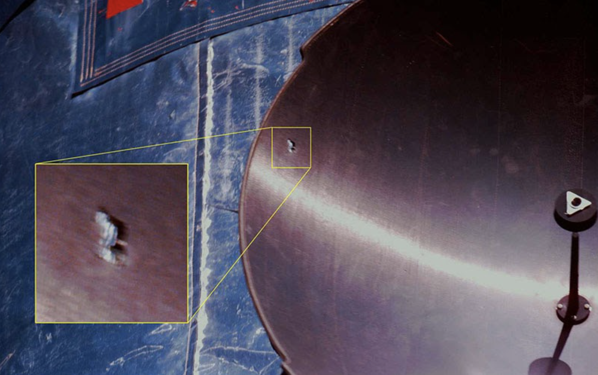
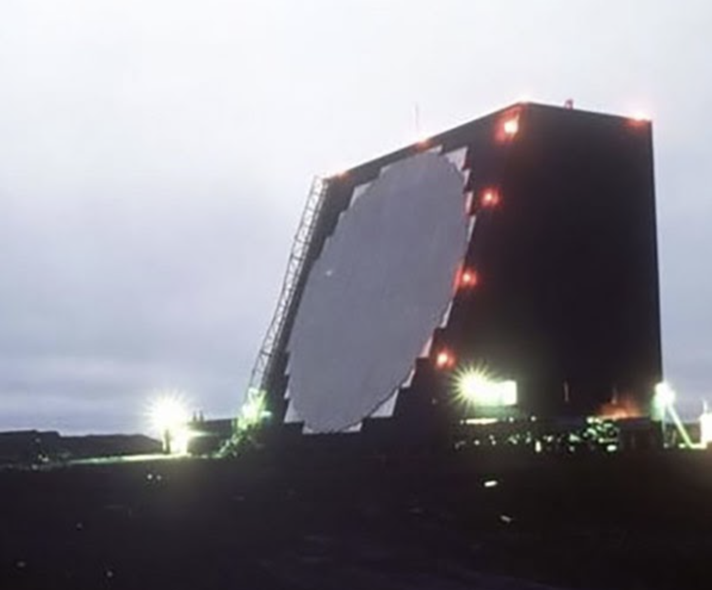

Cleanup of small scale space debris (<10cm)
Conservation of momentum means small chips of paint traveling at orbital velocities (17,000+ mph) can cause big damage. We do not have an exact count of how many pieces of small debris there are, nor exactly where they are. That is because the ground-based radar systems used by the Air Force to track space debris today can only detect objects greater than 10 cm in diameter. Statistical models estimate 1 million objects between 1 cm to 10 cm, and over 330 million objects less than 1 cm exist.
An impact that completely penetrated the antenna dish of the Hubble Space Telescope. Credit: NASA
There are several startups working on space situational-awareness products, whether that be higher-fidelity, more accurate space debris measurements taken with on-orbit sensors, or operators who are aggregating several data sources to provide collision warning and avoidance services to satellite mega constellations.
Cobra Dane radar located on Shemya Island, AK. This phased array radar can detect and track objects as small as 5 cm and is a contributing sensor to the U.S. satellite catalog. Credit: AFRL
It’s recognized that cleaning up small debris is a complex problem, so it’s a good thing we live in an age of innovators. There are companies working on layered high strength “catcher’s mitts” for the micro debris. There are companies working on laser ablation to disintegrate the waste. Another company is trying a charged net. There is even one company working on a deployable foam solution.
You can read more about orbital debris and the enablers of space stewardship for the New Space economy here: Why Orbital Debris Deserves Our Attention. For a lively discussion on the topic with experts from academia and industry, watch the Orbital Debris webinar, summarized here.